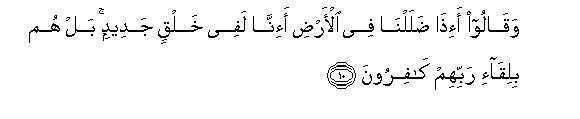
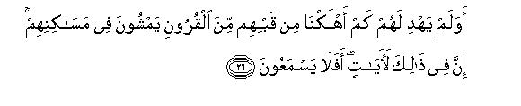

بسم الله الرحمن الرحيم
Sayyid Abul Ala Maududi - Tafhim al-Qur'an - The Meaning of the Qur'an
 32.
Surah As Sajdah (The Prostration)
32.
Surah As Sajdah (The Prostration)
The Surah has been entitled As-Sajdah after the theme of Sajdah (prostration) as expressed in verse 15.
From the style of the Surah it appears that it was sent down during the middle Makkah period, more particularly in its initial stage, for one does not find in its background that severity of the persecution and tyranny which one finds in the Surahs sent down in the later stages.
The main theme of the Surah is to remove the doubts of the people concerning Tauhid, the Hereafter and the Prophethood, and to invite them to all these three realities. The disbelievers of Makkah, when they talked of the Holy Prophet in private, said to one another, "This person is forging strange things sometimes he gives news of what will happen after death. He says: when you have become dust, you will be called to render your accounts, and there will be Hell and Heaven. Sometimes he says: these gods and goddesses and saints are nonentities: One God alone is the Deity. And sometimes he says: the discourses which I recite are not my own but Allah's Word. All these are strange things which he presents."The answer to these doubts and misgivings forms the theme and subject matter of this Surah.
In this connection, the disbelievers have been told: "Most certainly it is Allah's Word, which has been sent down in order to arouse a people who are sunk in heedlessness, being deprived of the bounties and blessings of Prophethood. How can you call it a fabrication when its having been sent dawn from Allah is manifest and self evident?"
Then, they have been asked, "Use your common sense and judge for yourselves which of the things presented by the Quran is strange and novel?Look at the administration of the heavens and the earth: consider your own creation and structure. Don't these things testify to the teaching which this Prophet is presenting before you in the Quran? Does the system of the universe point to Tauhid or to shirk? When you consider this whole system and your own creation, does your intellect testify that the One Who has given you your present existence, will not be able to create you once again?"
Then a scene of the Hereafter has been depicted, the fruits of belief and the evil consequences of disbelief have been mentioned and the people exhorted to give up disbelief even before they meet their doom and accept the teaching of the Quran, which will be to their own advantage in the Hereafter.
Then they have been told: It is Allah's supreme Mercy that He does not seize man immediately for his errors to punish him finally and decisively but warns him beforehand by afflicting him with small troubles and hardships and calamities and losses and strokes of misfortune so that he may wake up and take admonition.
Then it is said: "This is not the first and novel event of its kind that a Book has been sent down upon a man from God. Before this the Book had been sent upon Moses also, which you all know. There is nothing strange in this at which you should marvel. Be assured that this Book has come down from God, and note it well that the same will happen now as has already happened in the time of Moses. Leadership now will be bestowed only on those who will accept this Divine Book. Those who reject it shall be doomed to failure."
Then the disbelievers of Makkah have been admonished to the effect:"See the end of the doomed communities of the past by whose ruined habitations you pass during your trade journeys. Will you like to meet the same doom yourself? Do not be deluded by the apparent and superficial. Today you see that no one is listening to Muhammad (upon whom be Allah's peace) except a few young men and some slaves and poor men, and he is being made the target of curses and ugly remarks from every side. From this you have formed the wrong impression that his mission will fail. But this is only a deception of your eyes. Don't you see the phenomenon in your daily life that a land previously lying absolutely barren starts swelling with vegetation and plant life everywhere just by a single shower of the rain though before this no one could ever imagine that under the layers of its soil there lay hidden such treasures of greenery and herbage?"
In conclusion, the Holy Prophet has been addressed to the effect: "These people mock at what you say and ask as to when you will attain this decisive victory. Tell them: when the time comes for the final judgment regarding you and us, believing then will not profit you at all. If you have to believe, believe now. But if you intend to await the final judgment, then await it as you please."

In the name of Allah, the Compassionate, the Merciful.

[1-3] Alif. Lam Mim. The revelation of this book is, without any doubt, from the Lord of the Worlds.1 Do2 the people say that this man himself has forged it?3 Nay, but it is the Truth from your Lord so that you may warn a people to whom no warner has come before you.4 Maybe they are guided aright.5
[4-9] Allah it is6 Who created the heavens and the earth and all that is between them in six days, and then sat Himself upon the throne.7 You have no supporter and helper besides Him nor any intercessor before Hun. Will ,you not then take heed?8 He administers the affairs of the world from the heavens to the earth, and the report of this administration ascends (to be presented) before Him in a Day whose length, according to your reckoning, is a thousand years.9 He alone is the Knower10 of the hidden and the open, the All-Mighty,11 the Compassionate,12 Who gave everything He created the best form.13 He began the creation of man from clay; then spread his progeny by an extract the nature of a despicable water;14 then He shaped him15 and breathed into him of His Spirit;16 and He gave you the ears, and the eyes and the hearts:17 yet you are seldom grateful.18

[10-11] And19 the people say, "When we have become dust, shall we be created again?" The fact is that they disbelieve in the meeting with their Lord.20 Say to them, "The angel of death who has been appointed over you, shall seize you completely, and then to your Lord you will be made to return."21
[12-14] Would22 that you could see the criminals when they will be standing before their Lord with hanging heads. (Then they will be saying: "Our Lord, we have indeed seen and heard: now send us back so that we may act righteously: we are now convinced." (In reply it will be said :) "Had We so willed We would have given every soul its guidance from the beginning,23 but the Word of Mine, which I had said, has been fulfilled that I shall fill Hell with jinns and men,24 all together. So, taste now the recompense of your having forgotten the meeting of this Day.25 We, too, have forgotten you now! Taste the everlasting torment in consequence of your misdeeds."
[15-20] Only such people believe in our Revelations, who, when these are recited to them for their admonition. fall down prostrate and glorify their Lord with His praises, and are not proud;26 who forsake their beds and invoke their Lord in fear and in hope;27 and who spend out of what We have given them.28 No living being knows what comfort of the eyes has been kept hidden from them as a recompense for their deeds.29 Can he who is a believer be like him who is a sinner?30 They cannot be alike.31 For those who have believed and done good works, there will be Gardens for their dwellings,32 an entertainment as a recompense for their deeds. As for those who have adopted evil, their abode shall be Hell. Whenever they try to get out of it, they will be pushed back into it and it will be said to them, "Taste now the torment of the Fire which you used to deny."

[21-22] Even in this world We shall make them taste (one or the other) lesser torment before that greater torment; may-be they desist (from their rebellious attitude).33 And who could be more wicked than the one who is admonished by the Signs of his Lord and he spurns them?34 We shall certainly take vengeance on such criminals.
[23-25] Before this We gave Moses the Book. You should, therefore, have no doubt on receiving the same.35 We had made that Book a Guidance for the children of Israel;36 and when they showed patience and continued to have faith in Our Revelations, We raised among them such leaders as guided (the people) by Our Command.37 Surely on the Day of Resurrection your Lord alone will decide those things about which (the Israelites) have been differing among themselves.38

[26-30] And have they found no guidance (in the historical events) that before them We have destroyed many a nation in whose dwelling places they move about?39 There are many Signs in this. Do they not hear? And have they never seen how We cause the water to flow to a barren land and there from bring forth crops of which their animals and they themselves eat? Do they not see anything?40 They ask, "When will this judgment take place if you are truthful?41 Tell them, "To believe on the Day of Judgment will not in any way profit those who have disbelieved, nor will they get any respite after that."42 Well, leave them to themselves, and wait: they too are waiting.
1Several Surahs of the Qur'an begin with one or the other such introductory sentence, which is meant to declare at the outset therefrom this discourse is being issued. This is apparently the same sort of an introductory sentence as an announcer speaks in the beginning of a radio program to tell which radio station he is speaking from. But unlike the ordinary announcement from a radio station, when the extraordinary declaration at the beginning of a Surah is made to the effect that this message is being issued by the Ruler of the Universe, it is not merely meant to specify the origin of the discourse, but, besides, it also puts forward a big claim, a great challenge and a severe warning, for at the very outset it gives the big news that this .is not human but the Lord of the Worlds' Word. This declaration at once brings man face to face with the grave question: "Should I or should I not accept this claim? If I accept it I shall have to bow my head in submission before it for ever. Then, I shall be left with no freedom concerning it. If I do not accept it, I shall have to take the great risk that if it be really the Lord of the Worlds' Word, I shall have to meet with eternal misery and misfortune in consequence of rejecting it." That is why this introductory sentence solely on account of its extraordinary nature compels man to listen to this Word with frill attention and seriousness,. and then take the decision whether he would accept it as Divine Word or not;
Here, what has been said is not merely that this Book has been sent down by the Lord of the Worlds, but, besides, it also asserts most forcefully:" It is without any doubt the Book of God: there is absolutely no room for doubt about its having been revealed by Allah." If this assertive sentence is studied in the actual context itself, it will be seen that it contains the argument also along with the assertion, and this argument was not hidden from the people of Makkah before whom the assertion was being made. The whole life of the person presenting it had been spent before them. They had known him before he presented the Book as well as after he had presented it. They knew that the person presenting the Book with that assertion was the most righteous, the most serious and the most pious and virtuous man of their society. They also knew that until a day before he made the claim to Prophethood, no one had ever heard from him those things which he had started presenting suddenly just after his claim to Prophethood. They found a marked difference between the diction and style used in the Book and the diction and style used by Muhammad (upon whom be Allah's peace) himself, in his daily life, and they also recognized naturally that one and the same person could not have two styles so different from each other. They were also experiencing the highly miraculous literature being presented in the Book and, being the Arabic speaking people themselves, knew that all their literary men and poets were feeling utterly helpless in producing anything the like of it. They were also not unaware that there was a world of difference between the literary productions and orations of their poets and sorcerers and orators, and the Divine discourses being recited before them and the sublimity of the pure themes being presented in them. They did not see in the Book and in the message of the one presenting it any trace whatever of selfishness, which is always present in the work and message of a false claimant to prophethood. They could not find out, however, hard they might have tried, that Muhammad (upon whom be Allah's peace) by laying claim to Prophethood was trying to secure a certain benefit for himself or his family or his clan and tribe, or that he had any vested interest in the message he gave. Then, they could also see what sort of the people of their society were being drawn to his message and what great revolution was taking place in them as soon as they came in contact with his invitation. AII these things together supported and proved the assertion and claim. That is why in that background it was enough to say that it is beyond any doubt a Book that pas been sent down by the Lord of the Worlds. No further argument was needed to substantiate the claim.
2After the above introductory sentence, the first objection of the polytheists of Makkah, which they raised concerning the Prophethood of the Holy Prophet, is being dealt with.
3This is not merely a question but also an expression of great surprise and astonishment. It means to imply this: In spite of all those things on account of which this Book is, without any doubt, a Revelation from Allah, do those people yet say stubbornly that Muhammad (upon whom be Allah's peace) has himself forged it and is falsely attributing it to Allah? Don't they feet any shame in uttering such a senseless and baseless accusation? Don't they at all realize what opinion will those people form who are aware of Muhammad (upon whom be Allah's peace) and his work and his discourses and also understand the Book, when they hear their absurd accusation?
4Just as in the first verse it was considered sufficient to say, 'It is without any doubt the Book of God," and no further argument was needed to be advanced to prove the Qur'an to be Divine Word, so in this verse also the only thing being said to refine the disbelievers' charge that the Qur'an was being forged is: "It is the Truth from your Lord." The reason for it is the same as we have given in E.N. 1 above. The listeners were well aware of the person who was presenting the Qur'an, of the environment in which he was presenting it and the confidence and grace with which he was presenting it; they also knew the Book, its diction and literary excellence and its themes; they were also feeling the influence and impact it was having on contemporary society of Makkah. Under those conditions the Book's being the Truth sent down by the Lord of the Worlds, was such an evident factual reality that the mere mention of it in clear and definite terms was enough to refute the accusation of the disbelievers. Any attempt to strengthen this assertion by resort to reasoning would have caused it to be weakened instead. The case would be like this. Supposing it's day and the sun is shining bright, and a stubborn person calls it a dark night. To refute him it would be enough to say: "Do you call it a night when the bright day is clearly visible all around`.'" If after this, one tried to bring logical arguments to prove the day to be day. it would not in any way strengthen the reply but would rather weaken it instead.
5That is; "Just, as its being the Truth and a Revelation from Allah is absolutely certain, so is its being based on wisdom and Allah's mercy for you also evident. You yourselves know that for the past many centuries no Prophet has been raised among you, and you also know that your entire nation has been involved in ignorance and moral degeneration and sheer backwardness. In a state like this if a Prophet has been raised among you to awaken you and show you the right way, you should not be surprised. This was a great need which Allah has fulfilled for the sake of your own welfare and well-being.
One should note that in Arabia the light of the true Faith was first of all spread by the Prophets Hud and- Salih, who lived in the pre-historic age. They were followed by the Prophets Abraham and Ishmael, who lived 2,500 years before the Holy Prophet. After them the last Prophet to be raised in Arabia before the Holy Prophet was the Prophet Shu'aib, who had passed about 2,000 years earlier. This is a very long period. That is why it has been said, and rightly so, that no warner had come to those people. This did not mean that no warner had ever come to them, but it meant that the people had long stood in need of a warner.
Here, another question may arise in the minds, which should be answered straightaway. One may ask: When no Prophet had come to the Arabs for hundreds of years before the Holy Prophet, what would be the basis of accountability of the people who had lived in that age of ignorance? They could not tell guidance from deviation and error. Then, if they had gone astray, how could they be held responsible for their deviation? The answer is this: The detailed knowledge of the true Faith might have been lost to those people, but even in that age of ignorance the people were not unaware that the true Faith was based on TauhId, and the Prophets had never taught idol-worship to their followers. This truth was also contained in those traditions which the Arabs had received from the Prophets born in their own land, and they were also aware of this through the teachings of the Prophets Moses, David, Solomon and Jesus (peace be upon all of them) who had been born in the land adjoining their own. In the traditions of Arabia also it was well known that in the earliest times the Arabs' real religion was the Religion of Abraham and that idol-worship had been .introduced among them by a person named `Amr bin Luhayy. In spite of the prevalence of shirk and idol-worship, there were living in different parts of Arabia many such people, who rejected shirk, professed Tauhid and openly condemned offering of sacrifices at the shrines of idols. In the age close to the Holy Prophet's own, there had passed people like Quss bin Sa`idat-il-Iyadi, Umayyah bin Abi as-Salt, Suwaid bin `Amr alMustaliqi, Waki' bin Salamah bin Zuhair al-Iyadi', `Amr bin Jundub al-Juhani, Abu Qais Sarmah bin Abi Anas, Zaid bin `Amr bin Nufail, Waraqah bin Naufal, 'Uthman bin al-Huwairith, `Ubaidah bin Jahsh, `Amir bin az-Zarb al-'Advani ' Allaf bin Shahab at-Tamimi; , Al-Mutalammis bin Umayyah al-Kinani; , Zuhair bin Abi Salma, Khalid bin Sinan bin Ghais al-'Absi, `Abdullah al-Quda`i and many others, who were known as Hunafa'. These people publicly professed Tauhid as the basis of the Faith and declared their dissociation from the religion of the mushriks. Obviously they had got this concept from whatever had remained behind from the influence of the teaching of the Prophets. Moreover, the inscriptions belonging to the 4th and 5th centuries A. D. , which have been discovered in Yaman as a result of modern archaeological research and investigation, reveal that a monotheistic religion existed there in that age, whose followers acknowledged ar-Rahman (the All-Merciful) and Rabb-us-sama' wa!-ard ( Lord of the heavens and earth) alone as the One and only Deity. An inscription. dated 378 A.D. has been found from the ruins of a house of worship, which says that this house of worship has been built for the worship of "God of heavens" or "Lord of heavens". In an inscription of 465 A.D. there are words which clearly point to the doctrine of Tauhid. Similarly, an inscription of 512 A.D. has been discovered at Zabad, a place between the river Euphrates and Qinnasrin, in northern Arabia, bearing the words: Bism-ilahu, la 'izza illa lahu, /a shukra, ills lahv. All this shows that before the advent of the Holy Prophet, the teachings of the former Prophets had not altogether been forgotten, and there still existed many means which at least reminded man of the truth: "Your God is only One God. " (For further explanation, see E.N. 84 of Surah AI-Furqan).
6Now the second objection of the mushriks which they raised against the Holy Prophet's message of Tauhid, is being dealt with: They were severely critical of him because he rejected their gods and saints and openly invited the people to the creed that there is no helper, no fulfiller of needs except Allah and no answerer of prayers, no remover of ills and no sovereign other than Him.
7For explanation, see E.N. 41 of Al-A'raf, E.N. 4 of Yunus and E.N. 3 of Ar-Ra'd.
8That is, "Your real God is the Creator of the heavens and earth. But you in your folly have set up others than Him as your helpers and supporters in the vast 'Kingdom of this Universe. The Creator of this whole Universe and whatever it contains is Allah. Here, everything except Himself is created, and Allah has not gone to sleep after having created and made the world go. But He Himself is the Ruler and Sovereign and Sustainer of His Kingdom. Then, how senseless you are that you have set up a few of His creatures as the masters of your destinies! If Allah does not help you, none of them has the power to help you. If Allah should seize you, none of them has the power to secure your liberty. If Allah does not permit, none of them has the power to intercede for you before Him. "
9That is, "The events of a thousand years of your history are a day's work for Allah." He entrusts His scheme of work to the "angels of destiny", who submit their report of work before Him and receive orders for the scheme of the next day (whose length according to your calculation would be a thousand years). "This thing has been expressed at two other places also in the Qur'an, the study of which can help to understand it fully well. The disbelievers of Arabia said, "Muhammad (upon whom be Allah's peace) claimed to be a Prophet many years ago. He has warned us again and again that if we did not accept his message and rejected his invitation, we would be seized by Allah's torment. He has been repeating this threat since many years, but the torment has not overtaken us, although we have denied and rejected him clearly over and over again. Had his threats any substance in them, we would have been seized in the torment long ago " In this connection, in Surah AI-Hajj Allah says: "These people are demanding of you to hasten the chastisement. Allah will never fail to fulfil His threat, but a day with your Lord is equal to a thousand years as you reckon." (v. 47)
In Surah AI-Ma'arij (vv. 1-7), it has been said: "An asker has asked for a torment, (the torment) which must befall the disbelievers. There is none to avert it. It is from that God Who is the Owner of the Steps of Ascent. The angels and the Spirit ascend to His Presence in a day whose measure is fifty thousand years. So, have patience, O Prophet, a graceful patience! They think it is far off, but We see it near at hand. "
What is meant to be impressed in these verses is this: Allah's decrees are not passed and enforced in the history of mankind according to the earthly watches and calendars. When a nation is warned that if it adopted such and such an attitude in life, it would meet with such and such an end, the people would be foolish if from this they understood that the predicted consequences would follow their evil acts and deeds immediately. Not to speak of days and months and years, the occurrence of the results may even take centuries.
10That is, "For others one thing may be open and known but countless other things hidden. Whether angels or jinns, prophets or saints, or other pious people, none of them has the knowledge of everything. It is Allah alone Who knows everything. He knows all that has passed, all that is present, and all that will happen in the future. "
11"The All-Mighty": The One Who is dominant over everything: no power in the universe can hinder Him in His Design and Will and obstruct His Command from being enforced. Everything is subdued. to Him and nothing can resist Him.
12That is, He is not tyrannous to His creatures but is Gracious and Merciful in spite of being overwhelmingly dominant and possessor of all power and authority.
13That is, "In this limitless universe He has created countless numbers of things, but none of them is ugly and ill-shaped: everything has its own special beauty: everything is proportionate and symmetrical in its own way. Whatever He has made for a particular purpose, He has given it the most appropriate, form and invested it with the most :unable qualities for it. No better and more appropriate structure could be conceived, for example, for the eye and the ear which have been made for seeing and hearing. The air has precisely the same qualities which it should have for the purpose for which it has been made, and the water precisely the same qualities for the purpose for which it has been made. No one can point out any defect or flaw in the design of anything made by God; nor can anyone offer an alteration or modification in it."
14That is, "In the beginning He created man directly by His own act of Creation, and- then placed in man himself such a procreative ability that similar men continue being produced by his sperm-drop. By one excellent act He gave life and consciousness and intellect to a combination of earthly elements by His creative Command so that a wonderful creation like man came into being; by another excellent act He placed in man's own organism such a wonderful machinery for the production of similar more men in the future, whose mode of functioning is highly astonishing and amazing.
This is one of those verses of the Qur'an, which points to the direct creation of the first man. The scientists since the time of Darwin have felt greatly critical of this concept and have rejected it with contempt as unscientific. But the fact is that they cannot get rid of the concept of the direct creation of the first germ, if not of the first man, or of the first species of animals. If creationism is not accepted, then one will have to accept the utterly absurd idea that life originated merely accidentally; whereas even the simplest form of life as found in the single cell organism is so full of complexities and subtleties that regarding it as the result of an accident would be a million times more unscientific an idea than what the evolutionists think of creationism. And if once it is accepted that the first germ came into being by an act of direct creation, it would be no longer difficult to accept that the first member of every species of animal life was created by the Creator's own act of creation, and then its race started through different forms of procreation. If accepted this concept would explain away all those riddles and complexities which have remained unsolved in their theory of evolution in spite of all the scientific theorizing by the upholders of Darwinism. (For further explanation, see E.N. 1 of An-Nisa', E.N. 10 and 146 of AI-A'raf, and E.N. 17 of Al-Hijr).
15"Shaped him": developed him from a microscopic organism into a full-fledged human being and perfected him with limbs and other organs of the body.
16"Spirit" does not merely imply the life because of which a living thing moves, but the essential human characteristic which imbues man with consciousness and thought, discretion and judgment, discernment, -and discrimination, by virtue of which he is distinguished from all other earthly creations and becomes possessor of a personality and self and worthy of Allah's vicegerency. Allah has called this "Spirit" His own either because it belongs to Him alone, and its being attributed to Himself is just like a thing's being attributed to its master, or because the attributes of knowledge, thought, consciousness, will, judgment, discretion, etc. with which man has been characterized are a reflection to the attributes of Allah. They have not arisen from any combination of matter, but from Allah Himself. Man has received knowledge from Allah's Knowledge, wisdom from Allah's Wisdom, and discretion and authority from Allah's Authority. He has not received these from a source which is without knowledge, without wisdom and without discretion and authority. (For further explanation, see E.N. 19 of AI-Hijr).
17This is a fine way of saying something. Before the mention of "breathing into him of His spirit", man has been referred to in the third person: "He created him ..... spread his progeny ...... shaped him ...... breathed into him His spirit," for till then he was not even worthy of being addressed. Then, when the spirit had been breathed into him, he became worthy of the honor and it was said: "He gave you the ears . . . gave you the eyes . . . gave you the hearts," for after having been blessed with the Spirit, man became worthy of being addressed.
The ears and the eyes imply the instruments by which man obtains knowledge. Although the senses of taste and touch and smell are also instruments of obtaining knowledge, hearing and sight are the major and by far the more important senses. Therefore, the Qur'an has mentioned only these two at different places as the most important gifts of God to man. "The Heart" implies the mind which arranges the information obtained through the senses and draws inferences from it, and selects a possible way of action and decides to follow it.
18That is, "The wonderful human spirit with such excellent qualities has not been given to you so that you may live like the animals in the world and plan life for yourselves as an animal would. You were given the eyes so that you may see things with insight and not that you should live like the blind people; you were given the cars so that you may hear things with attention and not that you should live like the deaf people; you were given the hearts so that you may understand the reality and adopt the right way in thought and action and not that you should expend all your capabilities for collecting the means of nourishing and sustaining your animality, or that you may devise philosophies and programs of rebellion against your Creator. After having received these invaluable blessings from God, when you adopt polytheism and atheism, when you assume godhead yourself or become servants of other gods, when you lose yourself in sensual pleasure by serving your lusts, you in fact tell your God: "We were not worthy of these blessings: You should have made us a monkey, or a wolf, or an alligator, or a crow, instead of man."
19After answering the disbelievers' objections about the Prophethood and Tauhid now their objection about the Hereafter, which is the third basic belief of Islam, is being dealt with. The conjunction waw(and) in the beginning of the verse connects this paragraph with the foregoing theme, as if the sequence were like this: "They say: Muhammad is not Allah's Messenger," "They say: Allah is not One and the only Deity," and "They say: we shall not be raised back to life after death.
20The gap between the preceding and this sentence has been left for the listener to fill. The objection of the disbelievers as cited in the first sentence is so absurd that no need has been felt to refute it. Only its citation was regarded as enough to show its absurdity. For the two parts which make up the objection arc both unreasonable. Their saying: "When we have become dust" is meaningless for that which is "we" can never become dust. Dust is the destiny of the body after it has become devoid of the "we" The body itself is not the "we". When alive, limbs and other parts of the body may be cut off one by one, but the "we" remains intact. No part of it is cut off with the cut off limb. And when the "we" has vacated a body, the "we" remains no longer applicable even in its remotest sense although the body still remains intact. That is why a sincere lover goes and buries the body of his beloved, because the beloved is no more in the body. He buries not the beloved but the empty body, which was once the home of his beloved. Thus, the very first premise of the disbelievers' objection is baseless. As for its second part, "Shall we be re-created?" this question containing surprise and denial would not have arisen, had the objectors considered and taken into account the meaning of the "we" and its creation. The present existence of this "we" is nothing more than that a little of coal and iron and lime and sonic other earthly substances got together from here and there to combine themselves into a body, which became the home of the "we". Then what happens when it dies? When the "we" has left .the body, the constituent substances of its abode which had been gathered together from different parts of the earth go back to the same earth. The question is: He who had made this home for the "we", can He not make the same home from the same substances once again and settle the "we" in it? When this was possible before and has in actual fact existed, what can hinder its possibility and its existing as an actual fact once again? These are such things as can be understood by the application of a little of the common sense. But why doesn't man allow his mind to think on these lines? Why does he raise the meaningless objections about the life hereafter and the Hereafter? Leaving out all these details, Allah has answered this question in the second sentence, saying: "The fact is that they disbelieve in the meeting with their Lord." That is, "The real thing is not this that the recreation of man is something odd and remote in possibility, which they cannot understand, but in fact, what prevents them from understanding this is their desire w live freely and independently in the world and commit any sin, any excess that they please and then escape Scot-free from here: they should not be held accountable for anything, nor answerable for any of their misdeeds."
21That is, "Your `ego' will not mix in the dust,` but as soon as its term of action comes to an end, God's angel of death will come and will take it out of the body and seize it completely. No part of it will be allowed to become dust with the body. It will be taken intact into custody and produced before its Lord."
Let us consider in some detail the facts which have been presented in this brief verse:
(1) It says that death does not occur as a matter of course, like the stopping of a watch suddenly when it needs re-winding, but for this purpose Allah has appointed a special angel, who comes to receive the soul precisely in the manner as an official receiver takes something into his custody. From the details which have been mentioned at other places in the Qur'an, it becomes apparent that the chief angel of death has a whole staff of the angels under him, who perform a variety of duties in connection with causing the death, seizing the soul and taking it into custody. Moreover, their treatment of a guilty soul is different from their treatment of a believing, righteous soul. (For details, see An-Nisa': 97, AI-An`am: 93, An-Nahl: 28, AI-Waqi'ah: 83-94).
(2) It also shows that man does not cease to exist after death, but his soul survives the body. The words of the Qur'an: "The angel of death shall seize you completely," point out the same reality. For something which does not exist cannot be seized. Seizing something and taking it into custody implies that the seized thing should be in possession of the seizer.
(3) It also shows that at the time of death that which is seized is not the biological life of man but his self, his ego, which is connoted by the words like "I" and "we" and "you". Whatever personality this ego may have developed during its life-activity in the world, the same is taken out intact as a whole, without effecting any increase or decrease in its characteristics, and the same is made to return to its Lord after death. The same personality will be given a new birth and a new body in the Hereafter; the same will be subjected to trial; the same will be called to account; and the same will have to experience rewards or punishments.
22This will be the scene when after returning to its Lord the human 'ego' will be standing before Him to render an account of its deeds.
23That is, "Had it been Our will w give guidance to the people after having made them observe and experience the reality, We would not have brought you here after making you undergo this hard test in the world. We could have given you such guidance even before. But We had a different scheme for you from the very beginning. We wanted to test you by keeping the reality hidden from your eyes and senses in order to see whether you could recognize it by your intellect after perceiving its signs in the universe and in your own selves or not, whether you could take advantage of the help that We provided to you through Our Prophets and Our Books to recognize the reality or not, and whether after knowing the reality you could attain such control over your self or not that you should free yourselves from the service of your desires and lusts and believe in the reality and mend your ways and attitudes accordingly. You have failed in this test. Now setting the same test once again will be useless. If the second test is set in a condition when you remember everything that you have seen and heard here, it will be no test at all. And if, like before, you are given re-birth in the world, while you do not remember anything and the reality is kept hidden from you, and you are set the test once again as before the result will not be, any different. " (For further explanation, sec Al-Baqarah: 210, Al-An`am: 7-9, 27-28, 158; Yunus: 19; AI-Mu'minun: 99-100).
24The allusion is to what Allah had said, addressing Satan, at the creation of Adam: In vv. 69-88 of Surah Sad the whole story of that time has been related. When Satan refused to prostrate himself before Adam and asked for respite till Resurrection in order to seduce mankind, Allah had replied: "The truth is this, and the truth only I speak, that I shall fill Hell with you and all those who follow you from among mankind. "
The word ajma'in (all together) here does not mean that all jinns and all men will be cast into Hell, but it means that the satans and the men who follow them, will be cast into Hell all together.
25That is, "You became so absorbed in pleasure-seeking in the world that you totally forgot that you had to meet your Lord on this Day."
26In other words, they do not regard it as below their dignity to give up their false notions and believe in Allah's Revelations and adopt His service and obedience. Their conceit does not hinder them from accepting the truth and obeying their Lord.
27That is, "They worship their Lord instead of enjoying sensuous pleasures at night. They are not like the world-worshipers, who seek entertainments in music and dancing, drinking and merry-making, in the night in order to get relief from the day's fatigue and labor and toil. Instead, when they are free from their day's work and duties, they devote themselves to the adoration of their Lord, spend their nights in His remembrance, tremble out of fear of Him, and pin all their hopes on Him." "Who forsake their beds" does not mean that they do not sleep at all at night, but that they spend a part of the night in Allah's worship.
28In the original, rizq: lawful provisions. Unlawful provisions have nowhere been called rizq by Allah. The verse therefore means: They spend from whatever little or much of pure provisions We have given them; they do not overspend and do not grab unlawful wealth in order to meet their expenses.
29Bukhari, Muslim, Tirmidhi and Imam Ahmad have in different ways cited on the authority of Hadrat Abu Hurairah that the Holy Prophet said: "Allah says: I have got ready for My righteous servants that which has neither been seen by the eye, nor heard by the ear, nor ever conceived by any man. " The same thing has been reported with a little difference in wording by Hadrat Abu Sa' id Khudri, Mughirah bin Shu`bah and Sahl bin Sa'd as-Sai'di from the Holy Prophet and related with authentic links by Muslim. Ahmed, Ibn Jarir and Tirmidhi.
30Here mu min (believer) and Fasiq (sinner) have been used as two contrasting terms. Mu 'min is he who believes in Allah as his Lord and the One and only Deity and adopts obedience of the Law which Allah has sent down through His Prophets. Contrary to this, Fasiq is he who adopts the attitude of fisq (disobedience, rebellion, independence and obedience to others than Allah).
31That is, "They can neither have the same way of thinking and life in the world nor can they be treated alike by God in the Hereafter."
32That is, "The Gardens will not merely be a means of entertainment for them, but the same will be their dwelling-places in which they will live for ever.
33"The greater torment" is the torment of the Hereafter, which will be imposed on the guilty ones in consequence of disbelief and disobedience. "The lesser torment", in contrast, implies those calamities which afflict man even in this world, e.g., diseases in the life of individuals, deaths of the near and dear ones, serious accidents, losses, failures, etc. and storms, earthquakes, floods, epidemics, famines, riots, wars and many other disasters, in collective life, which affect hundreds of thousands of the people simultaneously. The reason given for sending these calamities is that the people should take heed even before they are involved in the "greater torment" and give up the attitude and way of life in consequence of which they will have to suffer the greater torment ultimately. In other words, it means this: Allah has not kept man in perfect security in the world so that he may live in full peace, and become involved in the misunderstanding that there is no power above him, which can cause him harm. But Allah has so arranged things that He sends disasters and calamities on individuals as well as on nations and countries from time to time, which give man the feeling that he is helpless and that there is about him an All-Powerful Sovereign Who is ruling His universal Kingdom. These calamities remind each individual and group and nation that there is another Power above him Who is controlling their destinies. Everything has not been placed at man's disposal. The real Power is in the hand of the Sovereign. When a calamity from Him descends on man, you can neither avert it by any artifice, nor can escape from it by invoking a jinn, or a spirit, or a god or goddess, or a prophet or saint. Considered in this light, these calamities are not mere calamities but warnings of God, which are sent to make man conscious of the reality and to remove his misunderstandings. If man learns a lesson from these and corrects his belief and conduct here in the world, he will not have to face the greater torment of God in the Hereafter."
34"The Signs of his Lord" include all kinds of the Signs. A perusal of all the Qur'anic verses in this regard shows that these Signs are of the following six kinds:
(1) The Signs which are found in everything from the earth to the heavens and in the system of the universe as a whole.
(2) The Signs which are found in man's own creation and in his constitution and body.
(3) The Signs which are found in man's intuition, his unconscious and subconscious mind and in his moral concepts.
(4) The Signs which are found in the continuous experience of human history.
(5) The Signs which are found in the , coming down of the earthly and heavenly calamities on man.
(6) And, over and above all these, the Revelations which Allah sent through His Prophets so that man may be made conscious in a rational way of those realities, which are pointed out by all the above-mentioned Signs.
All these Signs proclaim consistently and clearly: `O man, you are neither without God, nor the servant of many gods, but your God is only One God: no other way of life is correct for you except the way of His service and obedience. You have not been left to live a free and independent and irresponsible lift in this world, but you have to appear before yow God and render an account of your deeds after your life-activity here has come to an end, and be rewarded or punished accordingly. Therefore, it is in yow own interest that you should follow the guidance which your God has sent through His Prophets and His Books for your instruction and desist from an independent way of lift." Now, obviously, the man who has been warned in so many different ways, for whose admonition countless different Signs have been provided, and who has been blessed with the eyes to see and the cars to hear and the mind to think, and yet he closes his eyes to all these Signs, and closes his cars to the admonitions of his well-wishers, and uses his mind also for inventing stupid and blind philosophies only can be a wretched and wicked person. He only deserves to be given full punishment for rebellion when he appears before his God after the expiry of the period of test in the world.
35The address apparently is to the Holy Prophet, but the real addressees are the people who doubted his Prophethood and the revelation of the Divine Book to him. From here the discourse turns to the same theme that was mentioned in the beginning of the Surah (vv. 2-3). The disbelievers of Makkah were saying: "No book has come down to Muhammad (upon whom be Allah's peace) from Allah. He 'has himself forged it, but claims that it has been sent down by Allah." The first answer to this was given in the initial verses. This is the second answer. The first thing said in this regard is: "O Prophet, these ignorant people regard it as impossible that a Book should be sent down to you, and want that every other person also should at least be involved in suspicion about it even if he does not reject it altogether. But the revelation of a Book to a servant from Allah is not a novel and new event, which might have occurred for the first time today in human history. Before this Books have been sent down to several Prophets, the most welt-known among these being the Book which was sent down to the Prophet Moses (peace be upon him). A Book of the same nature has been sent down to you now. Therefore, there is nothing odd and strange in this, which may cause doubts in the minds of the people. "
36That is, "That Book was made a means of guidance for the children of Israel, and this Book, likewise, has been sent down for your guidance. " As has already been elucidated in verse 3, the full meaning of this verse can be understood only if one keeps in view the historical background. History bears evidence, and the disbelievers of Makkah also were not unaware, that the children of Israel had been passing miserable lives for centuries in Egypt. At such a. Juncture, Allah. raised the Prophet Moses among them, and delivered them from bondage. Then He sent down the Book among them, because of which the same very suppressed and subdued nation got guidance and became a prominent nation in the world. Alluding to this historical background, the Arabs are being told: 'Just as that Book was sent for the guidance of the Israelites, so has this Book been sent for your guidance. "
37That is, "Whatever progress the children of Israel made and whatever heights they attained by that Book, was not simply due to the reason that a Book had been sent among them. It was not an amulet that they might have hung around their necks and they might have started ascending the steps of glory under its good and protective influence. But the glory was the direct result of their firm faith in the Revelations of Allah, and of the patience and perseverance that they showed in following the Divine Commandments. Among the Israelites themselves also leadership fell to the lot of only those who were true believers of the Book of Allah and were not tempted at all by the greed of worldly gains and enjoyments. When in their love of the truth they stood firm against every danger, endured every loss and affliction, and exerted their utmost against every hostile force, from the lusts of their own selves to the external enemies of the true Faith, then only did they become the leaders of the world. The object is to warn the disbelievers of Arabia that just as the coming of the Book of Allah had decided the destinies of the children of Israel, so will this Book decide the destinies among you. Now only those people will become the leaders, who will believe in it and follow the Truth presented by it patiently and resolutely. Those who turn away from it are destined to end up in failure and wretchedness."
38The allusion is to the differences and schisms in which the children of Israel were involved after they became deprived of the faith and belief and gave up obedience of their righteous leaders and were given to the worship of the world. One result of this is obvious and before the whole world: they suffer from disgrace and infamy and misfortune; the other result is that which is not known, to the world: it will appear on the Day of Resurrection."
39That is, "Have they not learned any lesson froth this continuous experience of history that to whichever nation a Messenger came, the decision of its destiny became dependent upon the attitude it adopted with regard to him? If it rejected its Messenger, it could not escape its doom. The only people to escape were those who believed in the Messenger. Those who disbelieved became an object of warning for ever and ever."
40Keeping the context in view it becomes obvious that this thing has not been mentioned here for the sake of providing an argument for the life-after-death, as generally found in the Qur'an, but in this context its object is different. This, in fact, contains a subtle allusion to this effect: "Just as a person seeing a barren land cannot imagine that it will ever bloom and swell with vegetation, .but a single shower of the rain sent by God changes its color altogether, so is the case with the message of Islam at this juncture. People think that it is not going to gain ground, but a single manifestation of Allah's power and grace will cause it to gain such glory that people will be amazed at its progress."
41That is, "You say that Allah's succor will at last reach you and your rejectors will be struck down by His wrath. Then, tell us: When will this happen? When will judgment be passed between you and us?"
42That is, "It is not a thing for which you should feel so impatient and restless. When the torment of Allah comes, you will get no time to mend your ways. Make the best of the time which is available before the coming of the torment. If you will believe only when you see the torment, it will not avail you anything then.